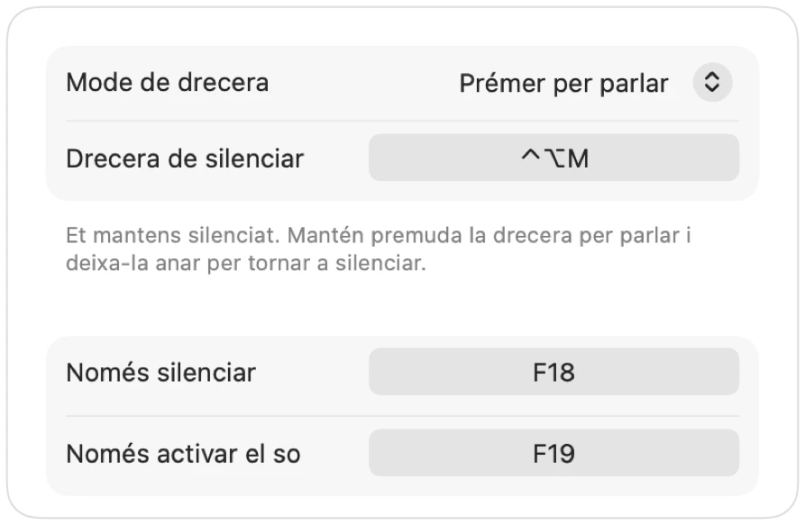

Prem per parlar al Mac a qualsevol app
La funció de prémer per parlar et manté silenciat fins que mantens premuda una tecla. És la manera més senzilla de mantenir el silenci en reunions grans o llocs sorollosos, però molt poques apps la tenen i cadascuna fa servir una tecla diferent.
Muffle afegeix l'opció de prémer per parlar a totes les apps del Mac. Tria «Prémer per parlar» a la configuració, mantén premuda la drecera per parlar i deixa-la anar per tornar a silenciar.
Fes servir la funció de prémer per parlar
- 1
Instal·la Muffle.
- 2
A la Configuració de Muffle, defineix «Mode de drecera» com a «Prémer per parlar».
- 3
Mantén premut Control-Opció-M mentre parles.
- 4
Deixa anar la tecla. Tornes a estar silenciat.

- Prefereixes una sola tecla? Configura una tecla per parlar a la configuració: ⌥ dreta, fn o un botó addicional del ratolí.
- Tria una drecera còmoda a la Configuració de Muffle, per exemple una tecla de funció F.
Preguntes
La funció de prémer per parlar funciona a Google Meet?
Sí. Muffle silencia el mateix micròfon, de manera que prémer per parlar funciona a Meet, Zoom, Teams, Discord i qualsevol altra app.
Hi ha una opció de prémer per silenciar?
Sí. Tria «Prémer per silenciar» i mantén premuda la drecera per silenciar un moment, com un botó de tossina.